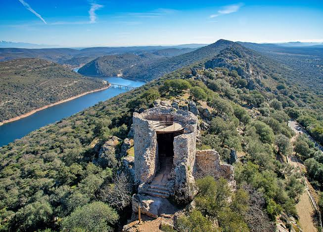
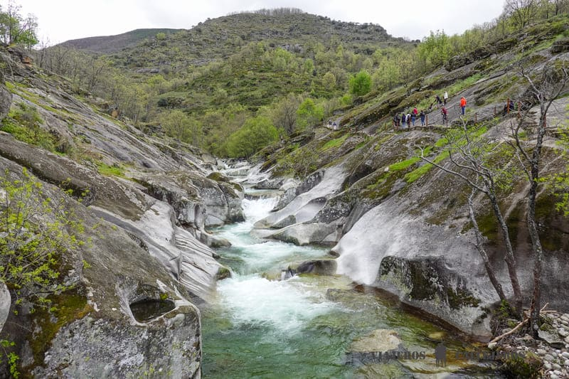
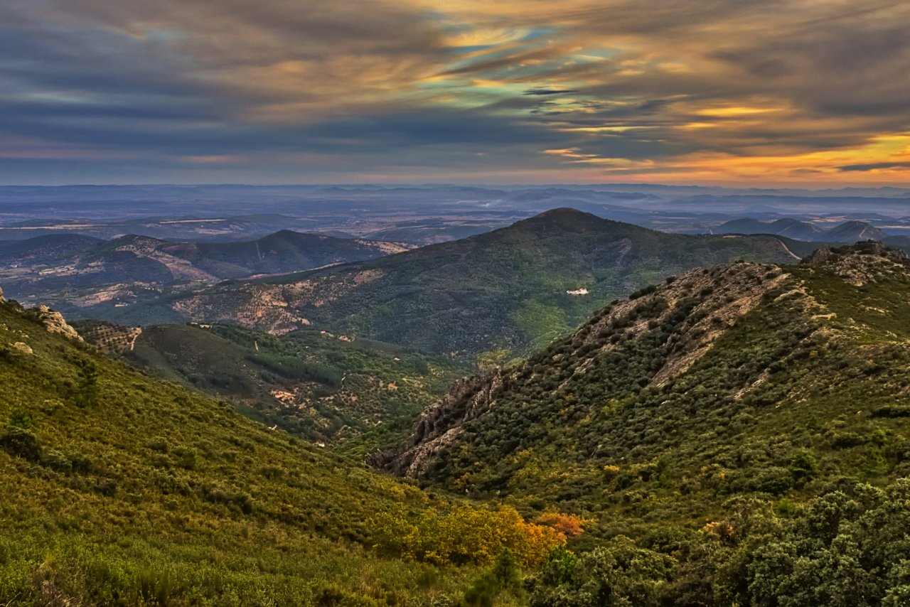
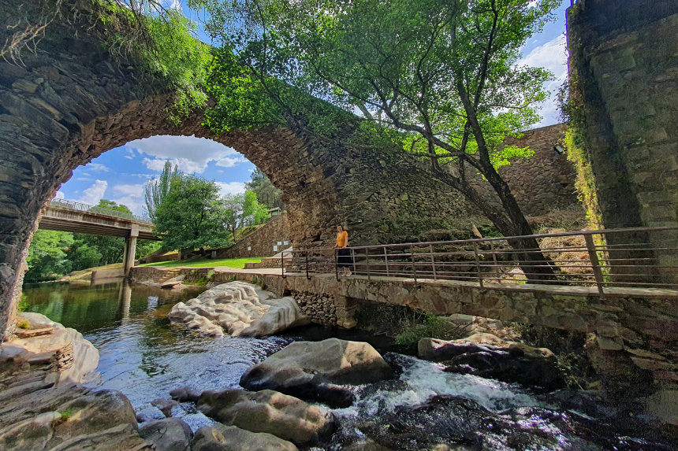

Multimedia
Ir a: Galería | Vídeo | Sonidos | Mapa
Galería de fotos

Parque Nacional de Monfragüe.

Valle del Jerte en primavera.

Geoparque Villuercas-Ibores-Jara.

Sierra de Gata.
Vídeo de presentación
Las cuatro rutas estrella del club en 12 segundos.
Solo el Valle del Jerte
Sonidos de la naturaleza
Escucha el río y los pájaros antes de salir de ruta:
Reto del club
Kilómetros recorridos este año: